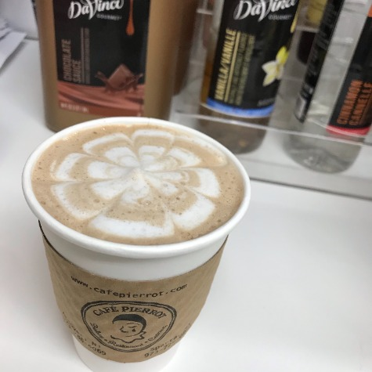
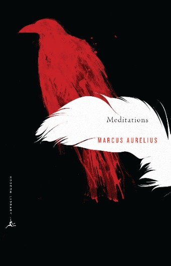
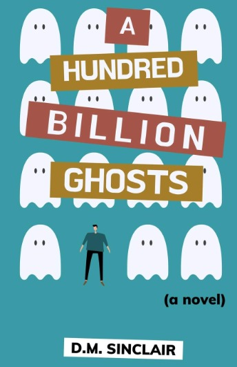

Education and Career
I am a sophomore in music technology at NYU. I am specializing in audio post-production for film/tv/advertising. I took the last year off from school due to covid and used the time to work for a local cafe/bakery in my home town and work on projects to build by reel. While the year off was nice, I am thrilled to be back in NYC after what feels like both a very long and short year away.

Hobbies
Outside of school, I love to play guitar, sing, read, and drink lots of coffee (while praying I won't get too jittery). I like to have fun and create through doodling, painting, or really any other crafts as a hobby to keep my creative well filled. I do also love watching new shows but have an awful habit of binge watching shows as soon as they come out and then down the drain goes all of my other responsibilities, so currently I am just rewatching comfort shows like "Freaks and Geeks" and "Seinfeld".
When it comes to reading, I tend to read anywhere from 3 to 5 books at a time so the stack on my nightstand (and floor if I'm being honest) is quite precarious at the moment. My books range from Marcus Aurelius's "Meditations" to D.M. Sinclair's "A hundred Billion Ghosts" (a novel in which suddenly all the ghosts are visible to the public). Basically as long as it's narritive, I'll read it (although long arduous introductions tend to put me off..oh well).

